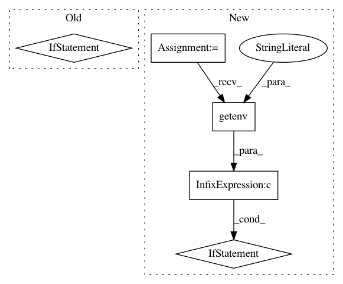

9df6c7659dc2a4c51367ffcf5dabb898ca87cd2c,mltsp/custom_feature_tools.py,,verify_new_script,#Any#Any#,604
Before Change
features_already_known_list = assemble_test_data()
all_extracted_features_list = []
if docker_images_available():
print("Extracting features inside docker container...")
all_extracted_features_list = docker_extract_features(
script_fpath=script_fpath,
features_already_known_list=features_already_known_list)
else:
print("Docker not installed - running custom features script could be "
"unsafe. Skipping generation of custom features.")
return []
return all_extracted_features_list
def list_features_provided(script_fpath):
After Change
features_already_known_list = assemble_test_data()
all_extracted_features_list = []
if docker_images_available() and not os.getenv("MLTSP_NO_DOCKER_TEST") == "1":
print("Extracting features inside docker container...")
all_extracted_features_list = docker_extract_features(
script_fpath=script_fpath,
features_already_known_list=features_already_known_list)
elif os.getenv("MLTSP_NO_DOCKER_TEST") == "1":
print("WARNING - generating custom features WITHOUT docker container...")
all_extracted_features_list = execute_functions_in_order(
features_already_known=features_already_known_list,
script_fpath=script_fpath)
elif not docker_images_available():
raise Exception("Docker image not available.")
return all_extracted_features_list
def list_features_provided(script_fpath):
In pattern: SUPERPATTERN
Frequency: 3
Non-data size: 5
Instances
Project Name: cesium-ml/cesium
Commit Name: 9df6c7659dc2a4c51367ffcf5dabb898ca87cd2c
Time: 2015-09-10
Author: a.crellinquick@gmail.com
File Name: mltsp/custom_feature_tools.py
Class Name:
Method Name: verify_new_script
Project Name: Pinafore/qb
Commit Name: df1dd9b108f3cd7d5130e7f654ea099021c7a2b3
Time: 2017-05-24
Author: ski.rodriguez@gmail.com
File Name: qanta/guesser/elasticsearch.py
Class Name: ElasticSearchIndex
Method Name: build_many_docs
Project Name: Pinafore/qb
Commit Name: df1dd9b108f3cd7d5130e7f654ea099021c7a2b3
Time: 2017-05-24
Author: ski.rodriguez@gmail.com
File Name: qanta/guesser/elasticsearch.py
Class Name: ElasticSearchIndex
Method Name: build_large_docs